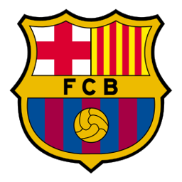
BAMés que un club
FC Barcelona
1899
Año de fundación del club
Blaugrana / Culés
Una breve historia
Fundado en 1899 por Joan Gamper, el FC Barcelona adoptó el lema 'Més que un club' (más que un club) por su papel como símbolo de identidad catalana. La era de La Masía y el tiki-taka de Guardiola lo convirtieron en referencia de un estilo de juego que cambió el fútbol moderno.
Fieles a los colores
de Barcelona
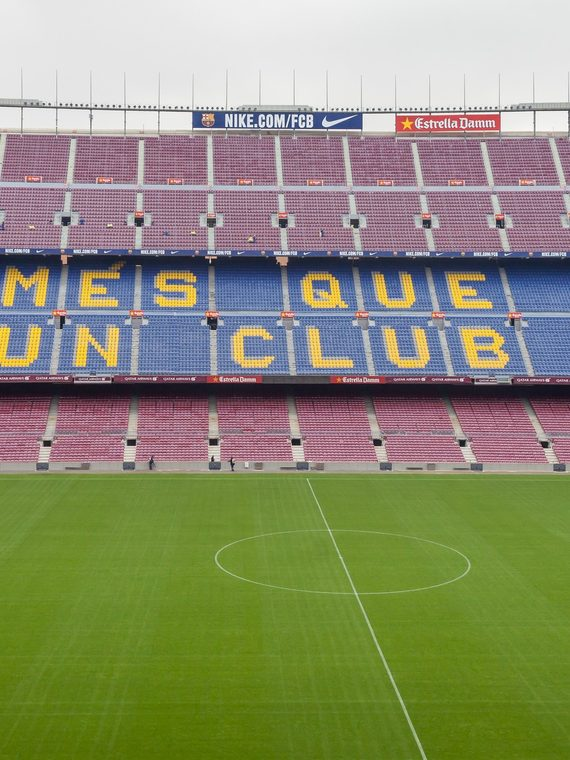
📷Foto pendiente
(barcelona-1.jpg)';" />
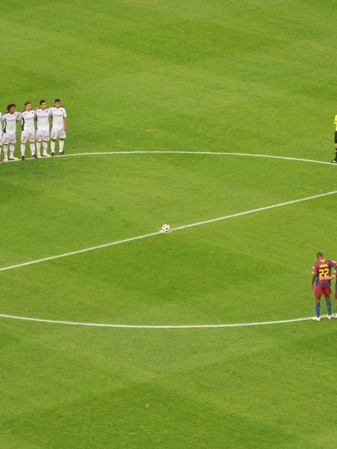
📷Foto pendiente
(barcelona-2.jpg)';" />
Títulos y logros
Vitrina de títulos
0
LaLiga
0
Copa del Rey
0
Champions League
0
Supercopa de España
La rivalidad
El duelo que enciende a la afición
Temporada 2026 / 27
Plantilla del primer equipo
Datos de ejemplo — reemplázalos con la plantilla real en data/teams.js.
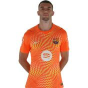
🧑';" /> Joan Garcia Portero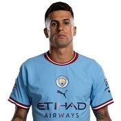
🧑';" /> Joao Cancelo Defensa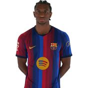
🧑';" /> Balde Defensa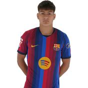
🧑';" /> Brian Centrocampista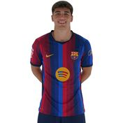
🧑';" /> Cubarsí Defensa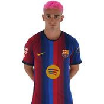
🧑';" /> Gavi Centrocampista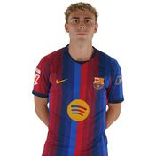
🧑';" /> Fermin Centrocampista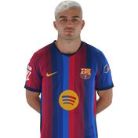
🧑';" /> Pedri Centrocampista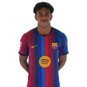
🧑';" /> Lamine Yamal Delantero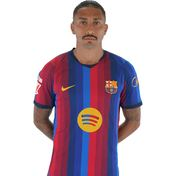
🧑';" /> Raphinha Delantero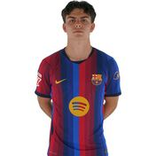
🧑';" /> Xavi Espart Defensa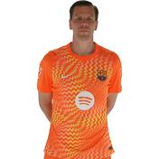
🧑';" /> Szczesny Portero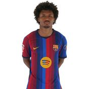
🧑';" /> Adeyemi Delantero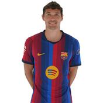
🧑';" /> Christensen Defensa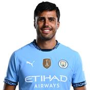
🧑';" /> Rodrigo Centrocampista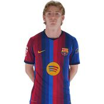
🧑';" /> Anthony Gordon Delantero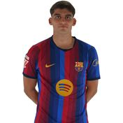
🧑';" /> Gerard Martín Defensa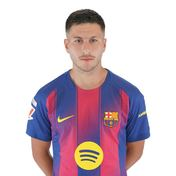
🧑';" /> Roony Centrocampista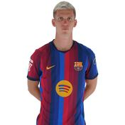
🧑';" /> Olmo Centrocampista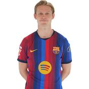
🧑';" /> F. De Jong Centrocampista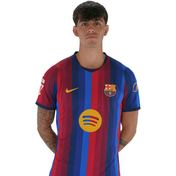
🧑';" /> Bernal Centrocampista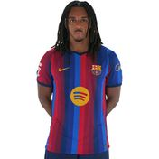
🧑';" /> Kounde Defensa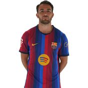
🧑';" /> Eric Defensa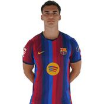
🧑';" /> Cortes Defensa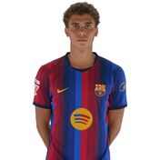
🧑';" /> Hamza Abdelkarim Delantero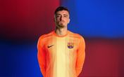
🧑';" /> Eder Aller Portero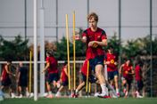
🧑';" /> Jordi Pesquer Defensa